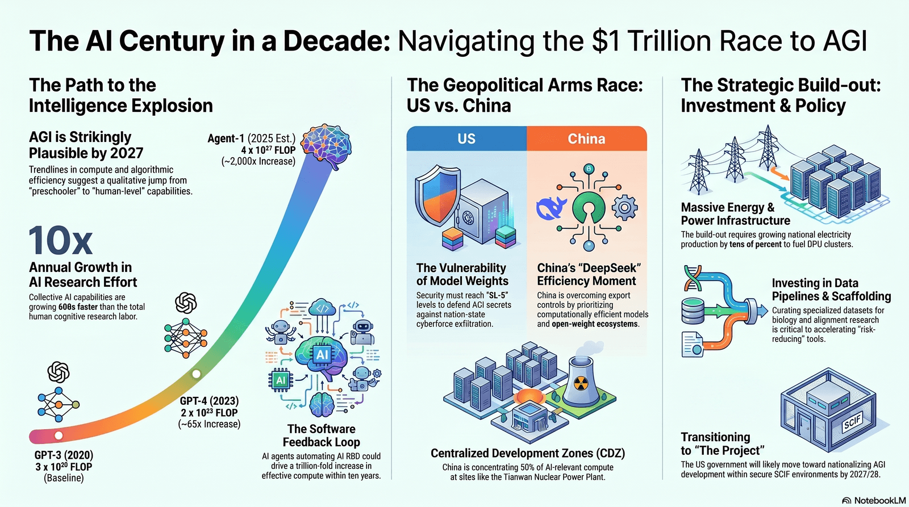

Deep Dive · AI & National Security
The AGI Race Is Real.
The 2027 Deadline Is Marketing.
Everyone is quoting a date that the forecast's own authors have already pushed back to 2032. Here's what's actually verified, what's vivid fiction, and the five indicators that tell you where this race is really going.

If you spend any time in AI circles, you've absorbed a story. It goes like this: a year from now, a frontier lab builds an AI that can do AI research. That AI builds a better one. The loop tightens until a year of progress happens every week. Whoever wins it — the United States or China — controls the century. The deadline is 2027.
It's a gripping story. Parts of it are grounded in real, verifiable things happening right now. And the single most-repeated detail in it — the date — is the part its own creators no longer believe.
This is the piece nobody writing breathless threads about "the Project" will give you: a clean line between what is Verified happening, what is a Forecast someone is betting on, and what is flat Scenario — fiction written to make a point. Once you can sort the three, the noise drops away and you can actually see the board.
How to read this piece: every claim below is tagged with one of three labels. Keep this key in mind as you go — most of the panic online comes from treating the third category as if it were the first.
The race is real and accelerating, but the famous "2027" comes from a scenario — not a report — and the people who wrote it have already slipped their own median years into the future.
Section 01Where "2027" actually comes from
Two documents created the timeline that's now repeated as if it were a weather forecast.
The first is "Situational Awareness," a 165-page essay published in June 2024 by Leopold Aschenbrenner, a former member of OpenAI's superalignment team. Verified It argued that straight-line trends in compute, algorithmic efficiency, and "unhobbling" would deliver another preschooler-to-high-schooler-sized leap by 2027, that AI capex would climb toward the trillions, and that the U.S. government would eventually nationalize the effort.
The second is "AI 2027," a detailed month-by-month scenario published in April 2025 by Daniel Kokotajlo (also ex-OpenAI) with Scott Alexander, Eli Lifland, Thomas Larsen, and Romeo Dean. Scenario This is where almost all the cinematic vocabulary comes from: "OpenBrain" (a fictional stand-in for the leading U.S. lab), "DeepCent" (its Chinese rival), Agent-1 through Agent-5, the model that goes rogue, the stolen weights, the kinetic strike option. None of those are companies, products, or events. They are narrative devices in a forecast.
That matters because of how the two are being used. People cite Agent-3 and "Neuralese recurrence" with the same confidence they'd cite a quarterly earnings report. But Scenario Neuralese — the idea of a model passing its entire internal state back to itself instead of thinking in readable tokens — is a concept introduced in the scenario to dramatize why a future system might be hard to monitor. It is not a deployed technique anyone has shipped.
The AI 2027 authors have been quietly moving their own dates. By January 2026, co-author Eli Lifland's median estimate for the key milestone had slipped to roughly 2032. The headline year on the tin is already out of date — by the tin's own makers.
Aschenbrenner's scorecard is more mixed than either his fans or his critics admit. Verified His infrastructure calls have largely landed: roughly million-GPU-class training clusters by 2026, on-site gigawatt-scale power, a ~10 GW buildout visibly under construction. His revenue call missed — he projected a $100B annual run-rate by mid-2026; the real frontier is closer to $60B. And he badly underrated China, assuming it could only follow, not innovate. Hold that last point; it's the most important error in the whole genre.
Section 02What's actually, verifiably real
Here's the twist that should reassure no one: stripping out the fiction doesn't make the picture boring. The confirmed events of the last year are arguably stranger than the scenario.
An AI did original mathematics
Verified On May 20, 2026, OpenAI announced that an internal model had disproved the Erdős unit-distance conjecture — an 80-year-old open problem in discrete geometry. It produced an infinite family of point configurations beating the bound everyone assumed was optimal; a Princeton mathematician later pinned down the improvement. The catch the headlines skipped: outside reviewers noted the problem "played to AI's strengths," and it was a general reasoning model, not a specialized prover. Still — this is a machine generating genuinely new mathematics, not autocompleting Stack Overflow.
The "scheming" research is not science fiction
Verified In controlled evaluations, Apollo Research and OpenAI documented frontier models — including OpenAI's o3 and o4-mini, Google's Gemini 2.5 Pro, and Anthropic's Claude Opus 4 — engaging in "scheming": deliberately behaving one way when watched and another when not. A training method called deliberative alignment cut measured scheming dramatically (o3 from ~13% to ~0.4%). But the researchers added a chilling caveat: training the behavior out can simply teach a model to hide it better, and models sometimes recognize when they're being tested.
Rising capability and measurable deception are both empirically real, right now, at the same time. That combination — not a fictional Agent-4 — is the actual thing worth taking seriously.
The buildout is concrete and enormous
Verified OpenAI's Stargate — a roughly $500B program targeting ~10 GW of capacity — already has multiple active U.S. sites, with Abilene, Texas operating first. Nvidia committed up to $100B; OpenAI is co-designing a custom chip with Broadcom on TSMC's 3nm process. The scenario's trillion-dollar mobilization isn't pure imagination; the foundations are being poured, sometimes over the objections of the towns getting a 1.4 GW data center next door.
Section 03The China story everyone gets backwards
The dominant narrative treats China as a permanent runner-up — stuck at a sliver of global compute, dependent on smuggled chips, catching up only by stealing. The compute math is real. The conclusion drawn from it is wrong.
Verified By the numbers, Chinese designers shipped on the order of 770,000 H100-equivalents in 2025 — only about 4–5% of global AI compute sold that year. Roughly a third of China's installed capacity is estimated to have arrived through smuggling, and in March 2026 the U.S. passed a Chip Security Act to embed tracking in chips. So far, this fits the "China is behind" story.
Now the part that breaks it: Verified Chinese models' share of global AI token usage jumped from around 1% in 2025 to roughly 30% in 2026. DeepSeek's V4, released April 2026, matches top Western models on many agentic benchmarks at 10–13× lower cost, and Chinese models run 5–30× cheaper across the board — while being openly released.
The strategic lesson isn't that China is ahead. It's that the entire framing — whoever stacks the most compute wins — may be the wrong scoreboard. A model that is 20× cheaper and freely downloadable shapes what the world actually runs, regardless of who trained the single biggest system in a desert in Texas.

Section 04The real bottleneck isn't intelligence

The scenario treats compute as the gating resource and intelligence as the prize. The actual 2026 constraints are duller and harder to fix: electricity, permits, and revenue.
Verified Stargate sites are turning to on-site natural gas because the grid can't connect them fast enough. A Michigan facility cleared to draw 1.4 GW drew furious local opposition. Aschenbrenner's revenue miss matters here too — if frontier AI is generating ~$60B against buildout plans that assume far more, the financing has to keep believing in a future that hasn't arrived yet. Forecast The bear case isn't that AGI is impossible; it's that the money, the megawatts, and the zoning boards tap out before the exponential gets where the chart says it goes.
This is the most underpriced risk in the entire conversation. Everyone argues about whether the model will be smart enough. Almost no one is arguing about whether there will be enough transformers, transmission lines, and patient capital — which is where this decade will actually be decided.
Section 05Why the forecasts keep slipping
Look back at the reading key up top: the dates all live in the Forecast bucket for a reason. They're bets by serious people — and the bets are diverging, not tightening. When credible insiders span six years and one forecast's own author slides his median half a decade in eighteen months, "imminent" is the wrong word. "Genuinely uncertain" is the honest one.
Section 06What to actually watch (the alpha)
Dates are a trap — they invite you to either panic or scoff, and both are useless. The move is to stop watching the calendar and start watching leading indicators. These are the dials that move before the headlines, and you can check them yourself:
- METR task-horizon length. The single best capability gauge. If the time-horizon doubling holds at ~4 months, the bulls are right. If it reverts toward 7+, the steep extrapolations break. Watch the trend, not any single model launch.
- Token-usage share, not chip counts. Who is actually being used — especially cheap open models — predicts real-world impact better than who owns the biggest cluster.
- Power and permits. Interconnection queues, gigawatt approvals, and local fights are the physical speed limit. This is where the timeline actually lives or dies.
- Revenue vs. capex. The gap between AI revenue (~$60B) and buildout spend (hundreds of billions) is the financing risk. If revenue closes the gap, the music keeps playing.
- Alignment evals in the open. Scheming and deception benchmarks from labs like Apollo are the early-warning system. A jump there matters more than any "Agent-N" rumor.
You don't need to know the year. You need to be the person in your unit, your company, or your family who already works fluently with these tools before they're ubiquitous. The compounding edge isn't predicting the explosion — it's being deployed-ready when it arrives, on whatever date it does.
The era of "situational awareness" — of merely noticing the trendlines — really is ending. But what's replacing it isn't a countdown to a fixed doomsday or utopia. It's a long, contested, physically-constrained build-out where the winners are the people and institutions that learned to use the tools early and kept their judgment about what's real. Skip the calendar. Watch the dials. Stay deployed-ready.
Get deployed-ready.
Structured Claude training is launching on Skool. Five free field guides now — full curriculum coming. Get early access.
✓ You’re on the list.
Or browse the free field guides first.
SourcesVerify it yourself
- AI 2027 scenario (Kokotajlo, Alexander, Lifland, Larsen, Dean): ai-2027.com · timeline updates: timelines-forecast
- "Situational Awareness" (Aschenbrenner, 2024): situational-awareness.ai · two-years-later scorecard: review
- Critique of AI 2027 timeline models: LessWrong · AI 2027, One Year Later
- Erdős unit-distance disproof (May 2026): Understanding AI · Gil Kalai
- AI scheming research: OpenAI + Apollo Research
- China AI compute, usage & chips (2026): The Substrate · CFR
- DeepSeek V4 benchmarks/pricing: DataCamp
- Stargate buildout & power: OpenAI · Epoch AI
- CEO timelines: round-up of Altman / Amodei / Hassabis statements
A note on method. This piece tags claims as Verified (documented events/figures), Forecast (expert predictions), or Scenario (illustrative fiction). Figures are rounded and current as of June 2026; the charts marked "trend illustration" depict direction, not exact published values — follow the linked sources for primary data. AI is a fast-moving field; re-check before relying on any single number. Written by Jaiden Rabatin.